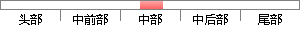

它涉及图像合成，滤镜，蒙版，样式，色彩校正，动作调板，路径工具，图层调板，通道使用等图像处理功能，可制作多种效果如：按钮制作，动画效果，人像处理，文字特效，材质纹理，三维物体，影响特效及广告创意设计等多种用途，是一款值得深入学习的好软件。
降重后句子
它涉及图像合成、过滤器、遮罩、样式、颜色校正、运动调色板、路径工具、图层调色板、通道使用和其他图像处理功能。它可以产生各种效果，如按钮制作、动画效果、肖像处理、文本效果、纹理、三维对象、效果效果和广告创意设计等用途。深入学习是件好事。软件。
片段位置图
